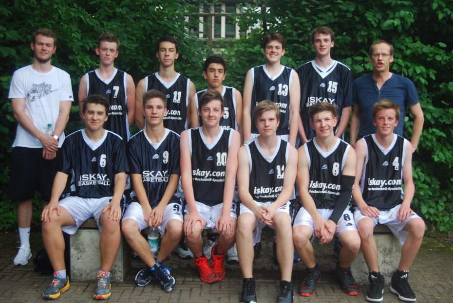

<!-- Start Outter Wrapper -->
<div class="outter-wrapper body-wrapper">


	<div class="wrapper blog-roll ad-pad clearfix">

		<!-- Start Main Column  -->
		<div class="col-3-4">

			<div class="clearfix post">


				<h1 class="title">Großartige Fights, wenn auch glücklos.</h1>

				<div class="mosaic-block circle">
					<a href="../assets/img/u18-mix/dsc_0256.jpg" class="mosaic-overlay fancybox" data-fancybox-group="gallery" title="Insert Title"></a>
					<div class="mosaic-backdrop">
						
					</div>
				</div>
				


				<p>Coach Max Röttle,Christian Lippach, Marko Gajic, Erol Akkurt, Pit Sander,Agus Córdoba,Coach Eberhard Krüger (stehend von links)</p>
				<p>Luis Wieser, Moritz Vogel, Declan Canavan, Felix Vogel, Raphael Westiner, Jasper Krüger (sitzend von links)</p>

				<p class="lead">Am 2.7.16 ist die U18 vom TSV Forstenried zum Qualifikationsturnier für die Bezirksliga nach Wasserburg gefahren. Der Gewinner des Dreier-Turniers konnte sich direkt für die Bezirksliga 16/17 qualifizieren. Teilnehmer des Turniers waren der TSV 1880 Wasserburg, MTV 1879 München und wir, der TSV Forstenried.</p>

				<p>Beim ersten Spiel trafen wir auf MTV 1879 München. Die Gegner kamen gut ins Spiel und führten bereits nach fünf Minuten mit 13:4. Doch danach holten wir Punkt um Punkt auf. Am Ende des 1. Viertels führten wir sogar 22:18. Im zweiten Viertel behielt der MTV die Oberhand und konnte einen Führungswechsel erwirken. Das zweite Viertel gewannen sie mit 25:13, so dass wir mit einem 10 Punkte-Rückstand 45:35 in die Pause gingen. Doch das dritte Viertel gehörte wieder uns.</p>
				<p>Wir ließen nur 8 Punkte zu und machten selber 22 Punkte. Damit lagen wir nach dem dritten Viertel mit 57:51 in Führung. Im vierten Viertel konnten wir bis zwei Minuten vor Ende eine 5 Punkte-Führung halten, doch MTV schaffte noch den Ausgleich zum 73:73. Es folgte die 1. Verlängerung, die noch nicht zur Entscheidung führte. Es stand 82:82. In der zweiten Verlängerung war uns der MTV eine Nasenspitze voraus und gewann 92:91. Herzlichen Glückwunsch! Es spielten: Jasper 34, Erol 2, Luis 2 (Bärenstark in der Defense), Chris 13, Raphael 4, Moritz, Declan 14 (1 Dreier), Marko 13 (1 Dreier), Felix 7, Pit 2 und Agus 2</p>
				<p>Es spielten: Jasper 34, Erol 2, Luis 2 (Bärenstark in der Defense), Chris 13, Raphael 4, Moritz, Declan 14 (1 Dreier), Marko 13 (1 Dreier), Felix 7, Pit 2 und Agus 2</p>

				<p>Im zweiten Spiel gegen den Gastgeber Wasserburg war für uns noch alles drin. Ein Vier-Punkte-Sieg musste her und wir wären Erster des Turniers und für die Bezirksliga qualifiziert. Doch unseren Jungs hing die Niederlage gegen MTV sehr nach, und sie kamen nicht richtig ins Spiel. Zur Pause lagen wir mit elf Punkten zurück (34:22). Wasserburg konnte die Führung im dritten Viertel noch auf 13 Punkte ausbauen, doch zum Ende des dritten Viertels drehten wir auf und Chris versenkte zwei Dreier, nun mussten wir im letzten Viertel nur noch einen 5-Punkte-Rückstand wettmachen.</p>
				<p>Im letzten Viertel konnten wir leider nur noch einen Punkt aufholen. Zum Ende verloren wir mit vier Punkten, nämlich 64:60. Schade.</p>
				<p>Es spielten: Jasper 16, Erol 11 (2 Dreier), Luis 2 (Bärenstark in der Defense), Chris 9 (3 Dreier), Moritz 13, Declan 2, Marko 1, Felix (leider verletzt, gute Besserung), Pit 2, Agus 4.</p>

				<blockquote class="right">Unsere  Mannschaft hat sensationell gekämpft und mit Spielern überwiegend aus dem jüngeren Jahrgang 2000 und jünger (im Kader waren nur zwei 99er) starken Gegnern Paroli geboten. Vielleicht haben wir nächstes Wochenende etwas mehr Glück und können uns beim 2. Qualifikationsturnier noch einen Platz für die Bezirksliga sichern. Verdient hätte es sich die Mannschaft. Drückt uns bitte die Daumen.</blockquote>

				<p>Ansprechpartner: Eberhard Krüger, Max Röttle</p>
				<p>Email: eberhardkrueger@web.de</p>

				<p>Link zu den <a href="#event-calender-u18">Trainingszeiten</a></p>

			</div>
		</div>


		<aside class="col-1-4 right last">

			<div class="widget">
				<h3 class="widget-title">Neueste Artikeln</h3>
				<ul class="list-1 widget-list">
					<li><a href="#artikel-jetzt-erst-recht">Jetzt erst recht!</a></li>
					<!--<li><a href="post.html">Pre season camp success</a></li>-->
					<!--<li><a href="post.html">Road to the grand finals</a></li>-->
				</ul>
			</div>
		</aside>
	</div>
	<!-- Start Right Sidebar  -->

</div>
